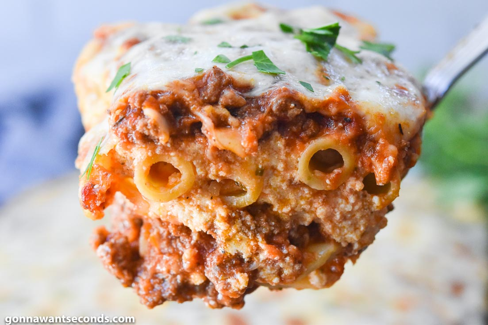

The Exhausted Home Cook
Baked Ziti

About
This is a wonderful baked ziti recipe that comes from my good friend Madi. I make it about once a month and it's enough to last my partner and I for the better part of a week. It travels well for lunches at work, and it's also just great for nights when I don't feel like cooking!
This recipe is perfect to make on a Sunday and bring to work for lunch throughout the week, or to last a few days for dinners. Personally, I can't stand onions, so I omit those and just use a bit of onion powder. I also don't bother with the wine - I never happen to have the right kind on hand - but you can certainly use it to elevate the dish.
Note that sometimes this recipe may yield more than will fit in my 9x13 pan - you may wish to use a bit less pasta so as not to let any go to waste, but the rest of the proportions may remain the same.
Ingredients
- 1 lb Rigatoni
- 1 lb Hot Sausage
- 1 lb Ricotta
- 1 lb Fresh Mozzarella
- 1 1/2 cups grated Parmesan
- 1/2 cup Cream
- 2 28 oz cans Tomato Puree (or whiz whole tomatoes in the blender)
- 2 tbsp Tomato Paste
- 1/2 cup Wine (white or red, dry)
- 1 Yellow Onion
- 4 Garlic Cloves
- 1 tsp Red Pepper Flakes
Steps
- Dice onion and mince garlic.
- Cook sausage until browned in a large pot.
- Add onion, cook until translucent.
- Add garlic, pepper flakes, and tomato paste, and cook for 2 minutes.
- Deglaze with wine and scrape up the browned bits.
- Add tomato puree. Bring to a boil, then lower to a simmer. Cook uncovered for 30 minutes.
- Cook pasta.
- Add 1 cup of the pasta water to the sauce.
- Mix ricotta, 1/2 cup parmesan, and cream in a bowl.
- Chop mozzarella into chunks.
- Preheat oven to 425.
- Reserve 2 cups sauce and toss pasta in it.
- Put cup of sauce on the bottom of 9x13. Layer on sauced pasta, ricotta, mozzarella, sauce, and then repeat again. Top with remaining cup of parmesan.
- Bake for 30-40 minutes (hot/cold). Let rest 10 minutes. Serve!